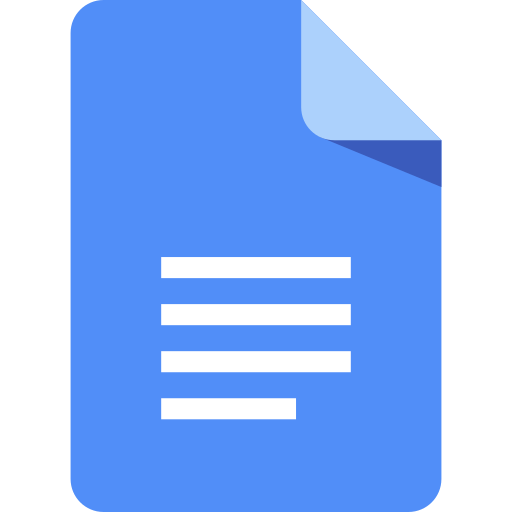
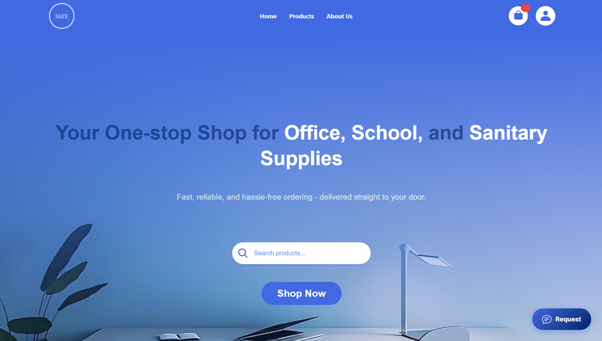
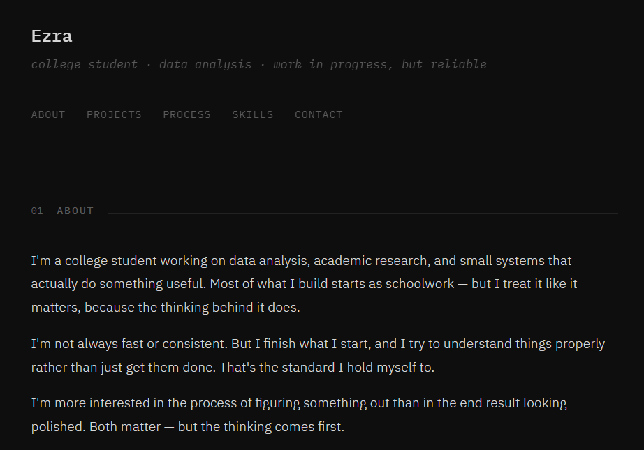

Performed exploratory data analysis on a movie dataset to uncover patterns, trends, and insights beyond basic statistics, applying data cleaning, transformation, and interpretation techniques to support meaningful findings. Demonstrates my approach to extracting meaningful insights from data through careful analysis, interpretation, and context-driven thinking.

View Notes

Google Docs Google Sheets
Google Sheets
Led the development of a client-based e-commerce web application for office and school supplies, overseeing implementation using PHP and MySQL for database. Highlights my ability to lead development, coordinate a team, and build a functional system from both frontend and backend perspectives.

View Notes
Led a group for a quantitative research study examining how artificial intelligence tools influence students' modern research practices, evaluating the effects and efficiency through structured data gathering, analysis, and statistical validation. Reflects my strength in research leadership, data analysis, and structuring complex work into a clear and validated study.

View Notes
Google Sheets
Built to showcase my work without overcomplicating things, just clear structure, honest presentation, and continuous iteration. Shows my approach to presenting work clearly and intentionally, focusing on structure, simplicity, and honest communication.
